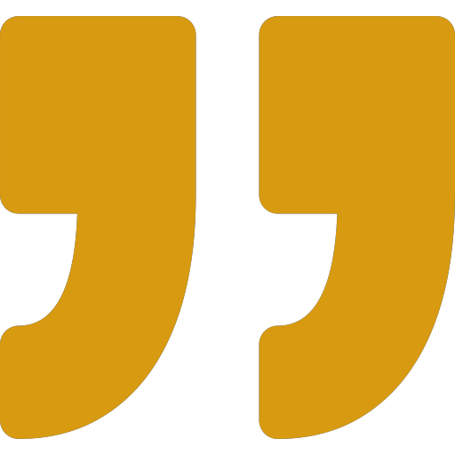

Léo est un jeune homme dont le succès, autant auprès de la gente féminine autant que de ses camarades masculins, n'est plus à prouver. Étudiant en développement web âgé de 19 ans, il est passionné par l'UX/UI Design, donc il souhaite par ailleurs en faire son métier.
Léo est passionné depuis sa plus tendre enfance par les jeux vidéos, et il perpétue cette passion au travers de Valorant. Il est également féru d'échecs (le jeu).
Léo pratique le badminton depuis des années. Après avoir remporté la totalité des championnats de sa région, il s'évertue maintenant à s'entraîner à la salle de musculation, pour devenir énorme et sec.
Maintenant qu'il va à la salle, Léo n'a plus qu'une phrase à la bouche: "Chicken and rice!". Il en mange religieusement chaque jour, accompagné de son fameux "bulk smoothie", composé de whey à 80%.